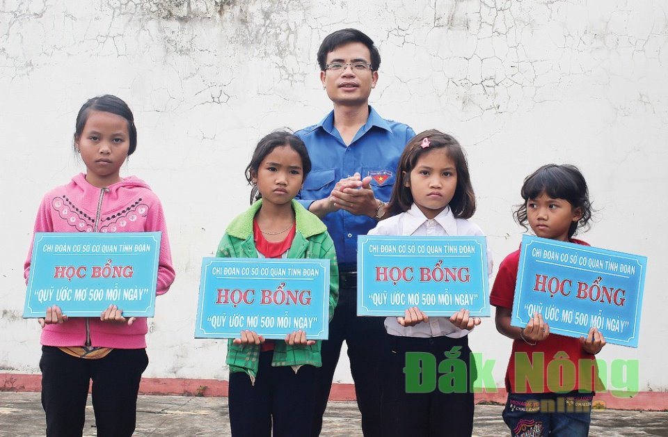
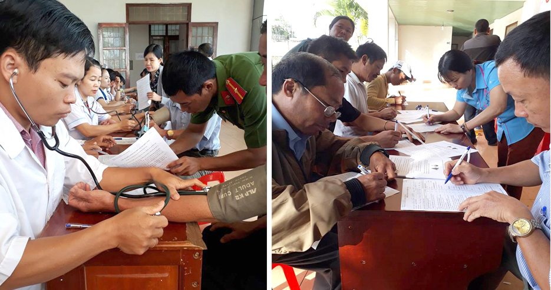

Trường Chính trị tỉnh Đaknông
 Lực lượng CSGT Công an Đắk Nông chú trọng công tác tuyên truyền luật giao thông đến với mọi tầng lớp nhân dân
Lực lượng CSGT Công an Đắk Nông chú trọng công tác tuyên truyền luật giao thông đến với mọi tầng lớp nhân dân Lễ ra quân tổng điều tra dân số và nhà ở năm 2019
Lễ ra quân tổng điều tra dân số và nhà ở năm 2019.jpg) Kỷ niệm 17 năm thành lập huyện
Kỷ niệm 17 năm thành lập huyện Khai mạc ngày Hội Sách tỉnh Đắk Nông năm 2019
Khai mạc ngày Hội Sách tỉnh Đắk Nông năm 2019Đảng trong cuộc sống hôm nay

răn trở sử thi
Đối với đồng bào M’nông trên địa bàn tỉnh Đắk Nông, sử thi (Ót N'drong) là niềm tự hào và được lưu truyền theo phương thức truyền miệng. Thế nhưng, hiện nay do nhiều nguyên nhân khác nhau, Ót N'drong đang đứng trước nguy cơ mai một, nếu không có biện pháp bảo tồn, giữ gìn một cách hữu hiệu..jpg)
Phát triển kinh tế 6 tháng đầu năm: Các lĩnh vực đều đạt kết quả khả quan
Theo đánh giá của UBND tỉnh, tình hình phát triển kinh tế của tỉnh trong 6 tháng đầu năm ở hầu hết các lĩnh vực đều khá thuận lợi, đạt kết q
Những ấn tượng đẹp về một vị tướng
Vẫn biết quy luật sinh - tử của tạo hóa khó ai cưỡng được, nhưng tôi vẫn hụt hẫng khi biết tin Trung tướng Đồng Sỹ Nguyên, nguyên Ủy viên Bộ

IT Today (bptv.vn)
Liên kết website
 |
 |
 |
 |
 |
Thông tin cần biết
Thống kê truy cập
- Đang truy cập5
- Hôm nay246
- Tháng hiện tại10,363
- Tổng lượt truy cập1,168,364

Công an huyện Đắk Song Triệt phá nhóm đối tượng cho vay nặng lãi
Công an huyện Đắk Son g Triệt phá nhóm đối tượng cho vay nặng lãi

Đa dạng các hình thức tuyên truyền về học tập và làm theo Bác Hồ
Một trong những kết quả nổi bật qua gần 1 năm thực hiện Chỉ thị 05 của Bộ Chính trị về đẩy mạnh học tập và làm theo tư tưởng, đạo đức, phong
.jpg)
Thanh niên Đắk Nông phấn khởi lên đường nhập ngũ
Tự tin, phấn khởi, hăng hái lên đường nhập ngũ là cảm nhận chung khi tiếp xúc với những thanh niên ở các địa phương trong toàn tỉnh trúng tu

Hơn 700 đơn vị máu trong buổi lễ ra quân hiến máu tình nguyện tại huyện Đắk Mil
Ngày 27/6/2018, tại huyện Đăk Mil đã diễn ra buổi lễ hiến máu tình nguyện do Ban chỉ đạo vận động hiến máu tình nguyện tỉnh Đắk Nông phối hợ